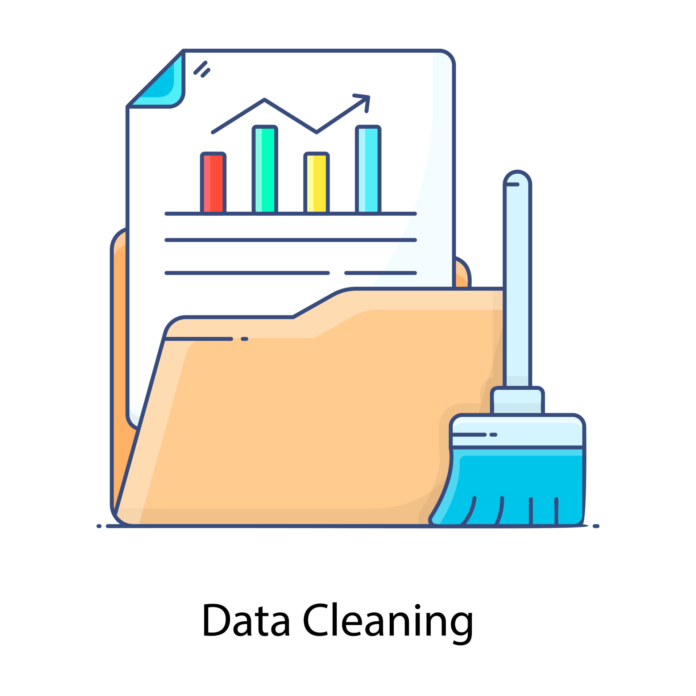

This is a comprehensive project that consists of cleaning and analyzing a synthetic dataset of nine separate tables, followed by documenting the results as well as explaining said findings and drawing respective conclusions.

This project documents the steps taken to clean and prepare a world layoffs dataset in order to make it suitable and valid for data exploration and analysis.
This project involves exploring the now clean dataset from the previous cleaning project to understand the data and analyze the results obtained in order to make sense of them so that in the end safe conclusions can be drawn.